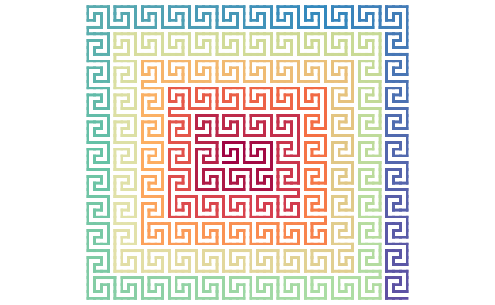

4x4 space-filling curves in meander type
Usage
sfc_4x4_meander(seed, code = integer(0), rot = 0L, flip = FALSE, type = 1L)
# S4 method for sfc_4x4_meander
sfc_expand(p, code, flip = FALSE)
draw_rules_4x4_meander(type = 1, flip = FALSE)Arguments
- seed
The seed sequence. In most cases, the seed sequence is a single base pattern, which can be specified as a single letter, then
rotcontrols the initial rotation of the base pattern. It also supports a sequence with more than one base patterns as the seed sequence. In this case, it can be specified as a string of more than one base letters, thenrotcan be set to a single rotation scalar which controls the rotation of the first letter, or a vector with the same length as the number of base letters.- code
A vector of the expansion code. The left side corresponds to the higher levels (more to the top-level) of the curve and the right side corresponds to the lower level (more to the bottom-level) of the curve. The value can be set as a vector e.g.
c(1, 2, 1), or as a string e.g."121", or as a number e.g.121.- rot
Rotation of the seed sequence, measured in the polar coordinate system, in degrees.
- flip
The same setting as in
sfc_peano()orsfc_meander().- type
Which type of rules to use? 1 for
SFC_RULES_4x4_MEANDER_1and 2 forSFC_RULES_4x4_MEANDER_2.- p
An
sfc_4x4_meanderobject.
Details
It is an extension of the 3x3 Meander curves to mode 4. For simplicity, it only supports I/R/L base patterns.
Examples
draw_multiple_curves(
sfc_4x4_meander("I", "11", type = 1),
sfc_4x4_meander("I", "12", type = 1),
sfc_4x4_meander("I", "11", type = 2),
sfc_4x4_meander("I", "12", type = 2),
nrow = 2
)
seed = paste(rep(paste0("R", sapply(0:10, function(i) strrep("I", i))), each = 2), collapse="")
sfc_4x4_meander(seed, 1) |> plot()

draw_rules_4x4_meander(type = 1)
 draw_rules_4x4_meander(type = 2)
draw_rules_4x4_meander(type = 2)